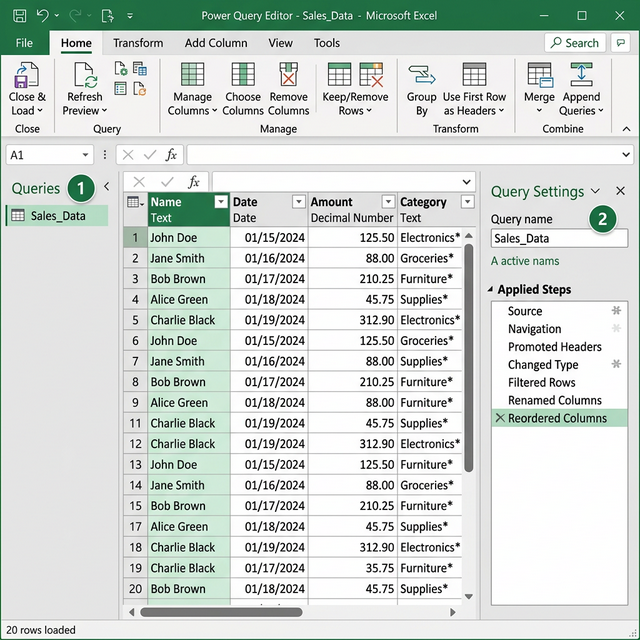

Cài đặt và hiển thị Power Query trên Excel
Hướng dẫn chi tiết cách cài đặt Power Query cho các phiên bản Excel khác nhau, cách mở Power Query Editor và tùy chỉnh giao diện làm việc.
3.1 Kiểm tra phiên bản Excel
Trước khi bắt đầu, cần xác định phiên bản Excel đang sử dụng vì cách truy cập Power Query khác nhau tùy phiên bản:
| Phiên bản Excel | Tình trạng Power Query | Cách truy cập |
|---|---|---|
| Excel 2010 | Cần cài add-in | Tab "Power Query" riêng |
| Excel 2013 | Cần cài add-in | Tab "Power Query" riêng |
| Excel 2016 | ✅ Tích hợp sẵn | Tab Data → Get & Transform |
| Excel 2019 | ✅ Tích hợp sẵn | Tab Data → Get & Transform |
| Excel 2021 | ✅ Tích hợp sẵn | Tab Data → Get & Transform |
| Microsoft 365 | ✅ Tích hợp sẵn (mới nhất) | Tab Data → Get & Transform |
3.2 Cài đặt Power Query cho Excel 2010/2013
Đối với Excel 2010 và 2013, bạn cần tải và cài đặt add-in Power Query từ Microsoft:
Xác định kiến trúc Excel
Mở Excel → File → Account → About Excel. Ghi nhận 32-bit hay 64-bit để tải đúng phiên bản.
Tải Power Query Add-in
Truy cập Microsoft Download Center → chọn phiên bản 32-bit hoặc 64-bit.
Cài đặt
Chạy file .msi đã tải, nhấn Next → chấp nhận điều khoản → Install → Finish.
Kích hoạt Add-in
Mở Excel → File → Options → Add-ins → phía dưới chọn "COM Add-ins" → Go → đánh dấu Microsoft Power Query for Excel → OK.
Xác nhận
Tab Power Query sẽ xuất hiện trên Ribbon. Nếu không thấy, khởi động lại Excel.
3.3 Truy cập Power Query trong Excel 2016+ / 365
Từ Excel 2016, Power Query đã được tích hợp sẵn với tên gọi "Get & Transform Data" trong tab Data:
Vị trí trên Ribbon
Mở Excel → nhấp tab Data → nhìn phần Get & Transform Data ở bên trái ribbon:
| Nút | Chức năng |
|---|---|
| Get Data | Menu chính để kết nối tất cả nguồn dữ liệu (File, Database, Web, Azure...) |
| From Text/CSV | Import nhanh từ file text hoặc CSV |
| From Web | Import nhanh từ URL trang web |
| From Table/Range | Mở Power Query Editor từ bảng dữ liệu đang chọn trong Excel |
| Recent Sources | Danh sách các nguồn dữ liệu đã kết nối gần đây |
3.4 Mở Power Query Editor
Có nhiều cách để mở Power Query Editor:
Cách 1: Từ bảng dữ liệu có sẵn
- Chọn bất kỳ ô nào trong bảng dữ liệu hoặc Table
- Tab Data → From Table/Range
- Power Query Editor sẽ mở với dữ liệu đã chọn
Cách 2: Từ Get Data menu
- Tab Data → Get Data → chọn nguồn dữ liệu
- Chọn file/bảng cần import
- Nhấn Transform Data (thay vì Load) để mở Editor
Cách 3: Chỉnh sửa query đã có
- Tab Data → phần Queries & Connections
- Panel bên phải hiển thị danh sách các queries
- Double-click vào query cần chỉnh sửa → Editor mở ra
3.5 Giao diện Power Query Editor chi tiết

① Ribbon (Thanh công cụ)
Gồm 4 tab chính:
- Home: Close & Load, Refresh Preview, Manage Columns, Reduce Rows, Sort, Split Column, Combine (Merge/Append)
- Transform: Data Type, Replace Values, Transpose, Pivot/Unpivot, Group By, Fill, Move Column, Rename, Format Text
- Add Column: Custom Column, Conditional Column, Index Column, Duplicate Column, Column from Examples, Invoke Custom Function
- View: Formula Bar, Monospace Font, Column Profile, Column Quality, Column Distribution, Advanced Editor
② Formula Bar
Hiển thị công thức M language tương ứng với mỗi bước. Bạn có thể chỉnh sửa trực tiếp hoặc bật/tắt qua tab View.
= Table.SelectRows(#"Changed Type", each [Tuổi] > 25)③ Queries Panel
Nằm bên trái, hiển thị tất cả queries trong workbook. Có thể tạo Group để tổ chức các query theo nhóm.
④ Data Preview
Khu vực chính hiển thị dữ liệu dạng bảng. Bạn có thể:
- Nhấp vào header cột để sắp xếp
- Nhấp dropdown trên header để lọc
- Chuột phải vào cột để xem menu ngữ cảnh
- Kéo cột để thay đổi vị trí
⑤ Applied Steps (Query Settings)
Nằm bên phải, ghi lại mọi thao tác bạn thực hiện theo thứ tự. Mỗi bước là một phép biến đổi:
- Nhấp vào bước để xem kết quả tại bước đó
- Nhấp chuột phải → Delete để xóa bước
- Nhấp chuột phải → Rename để đổi tên bước
- Nhấp chuột phải → Insert Step After để thêm bước mới
- Kéo bước để thay đổi thứ tự (cẩn thận khi làm điều này)
3.6 Tùy chỉnh hiển thị
Bật/tắt các panel
Trong tab View, bạn có thể bật/tắt:
- ☑️ Formula Bar: Hiển thị thanh công thức M
- ☑️ Column Quality: Hiển thị % dữ liệu Valid, Error, Empty trên mỗi cột
- ☑️ Column Distribution: Phân bố giá trị dưới dạng biểu đồ nhỏ
- ☑️ Column Profile: Thống kê chi tiết về dữ liệu trong cột đang chọn
Advanced Editor
Để xem toàn bộ mã M của query: tab View → Advanced Editor. Cửa sổ hiển thị toàn bộ code M:
let
Source = Excel.CurrentWorkbook(){[Name="Table1"]}[Content],
#"Changed Type" = Table.TransformColumnTypes(Source, {
{"Họ tên", type text},
{"Tuổi", Int64.Type},
{"Thành phố", type text},
{"Lương", type number}
}),
#"Filtered Rows" = Table.SelectRows(#"Changed Type",
each [Tuổi] > 25
),
#"Sorted Rows" = Table.Sort(#"Filtered Rows",
{{"Lương", Order.Descending}}
)
in
#"Sorted Rows"3.7 Quản lý Applied Steps
Panel Applied Steps (bên phải) ghi lại mọi thao tác — đây là "lịch sử" query của bạn:
| Thao tác | Cách thực hiện | Ghi chú |
|---|---|---|
| Rename step | Double-click vào tên step → đặt tên mới | Đặt tên rõ ràng: "RemoveTempColumns", "FilterAfter2020" |
| Delete step | Click ❌ bên trái step | Cẩn thận: xóa step giữa có thể gây lỗi cascade |
| Reorder step | Kéo thả step lên/xuống | Đổi thứ tự cải thiện hiệu suất (VD: filter sớm hơn) |
| Insert step | Click vào step trước → thực hiện thao tác mới | Step mới được chèn ngay sau step đang chọn |
| View formula | Click vào step → xem Formula Bar | Mỗi step = 1 dòng M code |
Bài tập 3.1: Cài đặt và kiểm tra Power Query
Mục tiêu: Xác nhận Power Query hoạt động trên máy tính của bạn
- Mở Excel → File → Account → ghi nhận phiên bản Excel (2016/2019/2021/365)
- Nhấp vào tab Data → tìm phần Get & Transform Data
- Nếu không thấy (Excel 2010/2013): File → Options → Add-ins → COM Add-ins → kiểm tra Power Query
- Nhấp vào Get Data → xem danh sách các nguồn dữ liệu hỗ trợ
- Ghi nhận các loại nguồn: From File, From Database, From Azure, From Power Platform, From Other Sources
Bài tập 3.2: Khám phá tùy chỉnh giao diện Editor
Mục tiêu: Thực hành tùy chỉnh hiển thị Power Query Editor
- Tạo bảng dữ liệu mẫu (10 dòng, 4-5 cột) → Data → From Table/Range
- Trong Power Query Editor, chuyển sang tab View
- Bật Column Quality → quan sát thanh màu ở đầu mỗi cột
- Bật Column Distribution → quan sát biểu đồ phân bố
- Bật Column Profile → nhấp vào một cột → xem thống kê chi tiết phía dưới
- Mở Advanced Editor (tab View) → quan sát code M → Close
- Nhấp chuột phải lên tên query ở Queries Panel → chọn Rename → đặt tên mới
- Close & Load
Bài tập 3.3: Quản lý Queries
Mục tiêu: Học cách quản lý nhiều queries
- Tạo 3 bảng dữ liệu khác nhau trên 3 sheet trong Excel:
- Sheet1: Bảng NhanVien (Mã NV, Họ tên, Phòng ban)
- Sheet2: Bảng PhongBan (Mã PB, Tên PB, Trưởng phòng)
- Sheet3: Bảng Luong (Mã NV, Tháng, Lương)
- Mở mỗi bảng vào Power Query (Data → From Table/Range) rồi Close & Load
- Vào tab Data → Queries & Connections → xem panel bên phải liệt kê 3 queries
- Di chuột qua mỗi query để xem thông tin: số dòng, thời gian load, nguồn dữ liệu
- Nhấp chuột phải vào query → thử các tùy chọn: Edit, Load To, Refresh, Delete